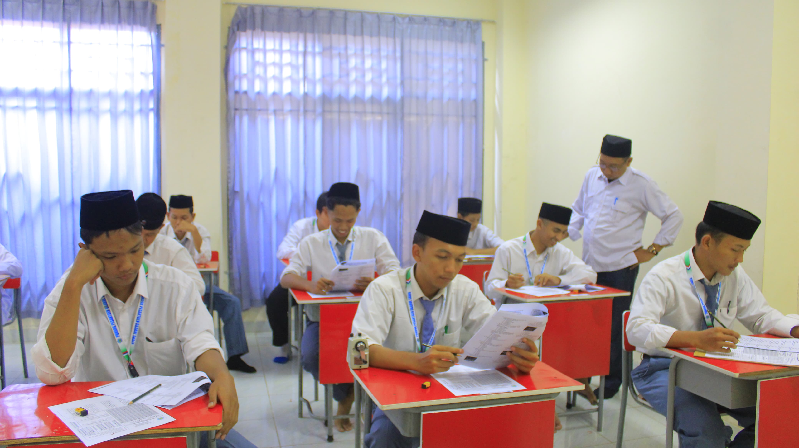
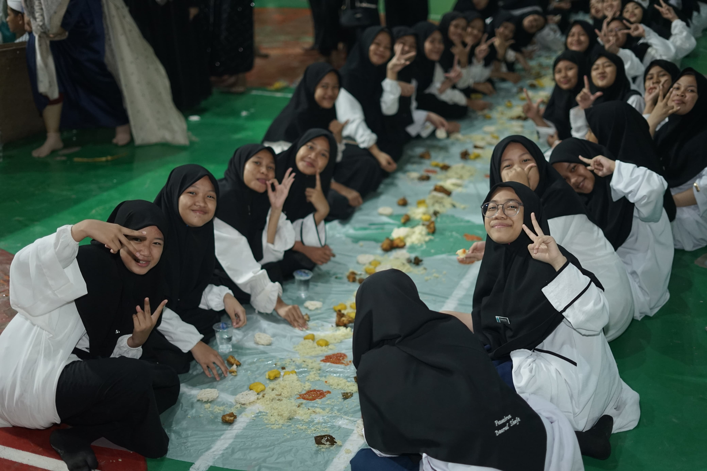

GALERI FOTO
Sholat Berjamaah di Masjid Pesantren

Kajian Kitab Kuning

Program Tahfidz Al-Quran

Ekstrakurikuler Hadroh

Latihan Pencak Silat
Murottal Al Quran di ajarkan dengan nada nada yang bagus

Santri Tahfidz

Tabligh Akbar
Kedatangan santri baru 2017

Ruang Pramuka
Lapangan
Laboratorium Komputer

Pembelajaran di Kelas

Pramuka
Kegiatan diluar pesantren

Ruang Kelas Belajar

Makan Bersama Santriwati

Acara Harlah